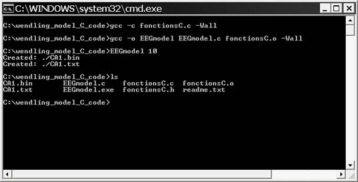
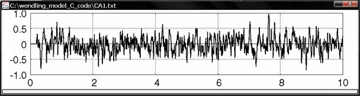

Model described in Authors: Wendling F, Hernandez A, Bellanger JJ, Chauvel P, Bartolomei F Title: Interictal to ictal transition in human temporal lobe epilepsy: insights from a computational model of intracerebral EEG. Journal: J Clin Neurophysiol. 2005 Oct;22(5):343-56. ================================================ Fabrice WENDLING ================================================ Laboratoire Traitement du Signal et de L'Image INSERM U642 - UNIVERSITE DE RENNES 1 Campus de Beaulieu 35042 Rennes Cedex - France - http://perso.univ-rennes1.fr/fabrice.wendling/ ================================================ THIS IS A C VERSION OF THE MODEL FOR MS WINDOWS ================================================ TO COMPILE: ================================================ 1) open a shell (DOS command under Windows) 2) change the current directory to the one containing the EEGmodel code 3) type gcc -c fonctionsC.c -Wall gcc -o EEGmodel EEGmodel.c fonctionsC.o -Wall  NOTE: gcc (GNU C compiler) must be installed on your machine ================================================ TO EXECUTE: ================================================ type "EEGmodel 10" Note: 10 is the simulation duration, i.e. 10 seconds here  ================================================ OUTPUT FILES: ================================================ The output files (the simulated EEG signal) are generated in current directory. CA1.bin : binary format (1 column = simulated EEG, 4 bytes, float) CA1.txt : text format (2 columns: time and simulated EEG) The text file can be displayed using any plot software. ================================================ Directory contents: ================================================ EEGmodel.c --> the main program fonctionsC.c --> the routines fonctionsC.h --> the prototypes of routines readme.txt --> this file EEGmodel.exe --> the exe (windows) fonctionsC.o --> obj code (windows) CA1.bin --> output file (binary) CA1.txt --> output file (ascii)